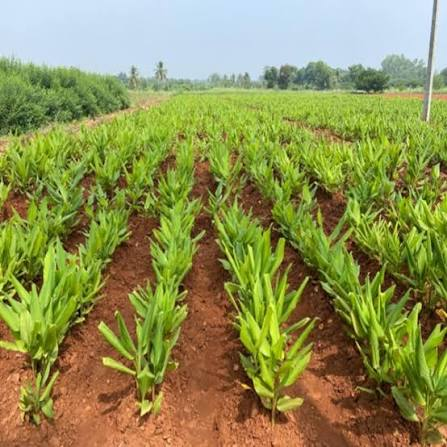
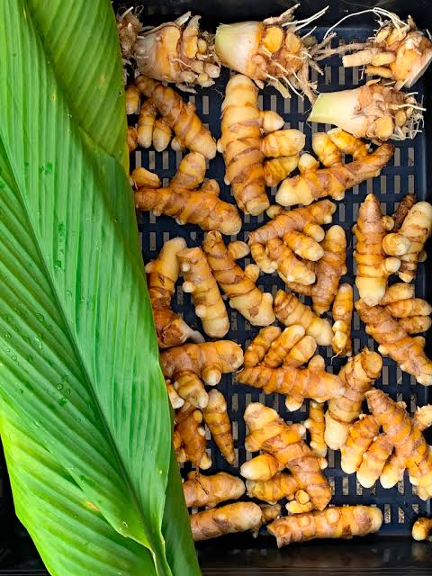
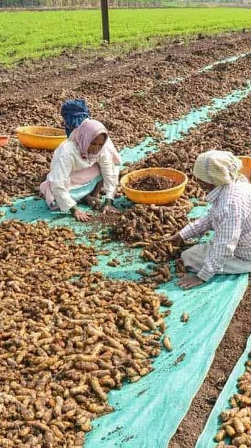

Turmeric from the field
See where the product begins — in cultivated fields and careful agricultural work.
GUDDA FARM brings farm-rooted turmeric and agricultural produce to wholesale, processing and bulk buyers — with a focus on quality, consistency and long-term relationships.
Our current focus is turmeric, from growing fields and fresh harvest through sorting and preparation for buyers.


Natural rhizomes at harvest, suitable for bulk sourcing requirements.

Produce handled and prepared with attention to buyer requirements.
GUDDA FARM is built around a simple promise: build dependable relationships around quality agricultural produce.
Today, the brand is being developed with a B2B focus — connecting agricultural sourcing in Karnataka with wholesalers, processors, traders and other bulk buyers.

Share your product requirement, approximate quantity, packaging preference and destination. We’ll use the details to start the conversation.
Suitable for: wholesalers • processors • traders • exporters • food businesses